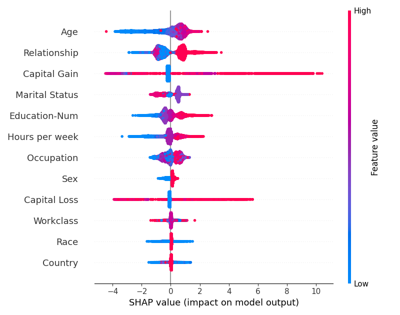

Note
Click here to download the full example code
07. SHAP Beeswarm Plot
This script provides a concise, fundamental example of how to generate a SHAP beeswarm plot to visualize global feature importance. ü§ñ It trains an XGBoost classifier on the adult census dataset, computes SHAP values, and then creates the classic beeswarm summary plot, which displays the impact of the most influential features on the model‚Äôs output.
Out:
16%|=== | 5193/32561 [00:11<00:57]
18%|==== | 5710/32561 [00:12<00:56]
19%|==== | 6227/32561 [00:13<00:54]
21%|==== | 6741/32561 [00:14<00:53]
22%|==== | 7240/32561 [00:15<00:52]
24%|===== | 7668/32561 [00:16<00:51]
25%|===== | 8146/32561 [00:17<00:50]
27%|===== | 8631/32561 [00:18<00:49]
28%|====== | 9094/32561 [00:19<00:49]
29%|====== | 9560/32561 [00:20<00:48]
31%|====== | 10016/32561 [00:21<00:47]
32%|====== | 10500/32561 [00:22<00:46]
34%|======= | 11012/32561 [00:23<00:45]
35%|======= | 11445/32561 [00:24<00:44]
37%|======= | 11885/32561 [00:25<00:43]
38%|======== | 12378/32561 [00:26<00:42]
39%|======== | 12829/32561 [00:27<00:41]
41%|======== | 13284/32561 [00:28<00:40]
42%|======== | 13710/32561 [00:29<00:39]
44%|========= | 14168/32561 [00:30<00:38]
45%|========= | 14660/32561 [00:31<00:37]
47%|========= | 15169/32561 [00:32<00:36]
48%|========== | 15645/32561 [00:33<00:35]
49%|========== | 16021/32561 [00:34<00:35]
50%|========== | 16419/32561 [00:35<00:34]
52%|========== | 16847/32561 [00:36<00:33]
53%|=========== | 17317/32561 [00:37<00:32]
55%|=========== | 17819/32561 [00:38<00:31]
56%|=========== | 18325/32561 [00:39<00:30]
58%|============ | 18750/32561 [00:40<00:29]
59%|============ | 19181/32561 [00:41<00:28]
60%|============ | 19601/32561 [00:42<00:27]
62%|============ | 20065/32561 [00:43<00:26]
63%|============= | 20545/32561 [00:44<00:25]
65%|============= | 21027/32561 [00:45<00:24]
66%|============= | 21512/32561 [00:46<00:23]
68%|============== | 22008/32561 [00:47<00:22]
69%|============== | 22438/32561 [00:48<00:21]
70%|============== | 22880/32561 [00:49<00:20]
72%|============== | 23321/32561 [00:50<00:19]
73%|=============== | 23813/32561 [00:51<00:18]
75%|=============== | 24315/32561 [00:52<00:17]
76%|=============== | 24832/32561 [00:53<00:16]
78%|================ | 25348/32561 [00:54<00:15]
79%|================ | 25857/32561 [00:55<00:14]
81%|================ | 26375/32561 [00:56<00:13]
83%|================= | 26891/32561 [00:57<00:12]
84%|================= | 27403/32561 [00:58<00:10]
86%|================= | 27917/32561 [00:59<00:09]
87%|================= | 28433/32561 [01:00<00:08]
89%|================== | 28946/32561 [01:01<00:07]
90%|================== | 29463/32561 [01:02<00:06]
92%|================== | 29978/32561 [01:03<00:05]
94%|=================== | 30485/32561 [01:04<00:04]
95%|=================== | 30981/32561 [01:05<00:03]
96%|=================== | 31381/32561 [01:06<00:02]
98%|===================| 31854/32561 [01:07<00:01]
99%|===================| 32367/32561 [01:08<00:00] C:\Users\kelda\Desktop\repositories\virtualenvs\venv-py311-psc\Lib\site-packages\shap\plots\_beeswarm.py:503: UserWarning:
FigureCanvasAgg is non-interactive, and thus cannot be shown
13 # Libraries
14 import xgboost
15 import shap
16 import matplotlib.pyplot as plt
17
18 # Load shap dataset
19 X, y = shap.datasets.adult()
20
21 # Train model
22 model = xgboost.XGBClassifier().fit(X, y)
23
24 # Create shap explainer
25 explainer = shap.Explainer(model, X)
26 shap_values = explainer(X)
27
28 # Create beeswarm plot using explainer
29 shap.plots.beeswarm(shap_values,
30 max_display=12,
31 order=shap.Explanation.abs.mean(0))
32
33 # Adjust
34 plt.tight_layout()
Total running time of the script: ( 1 minutes 11.083 seconds)